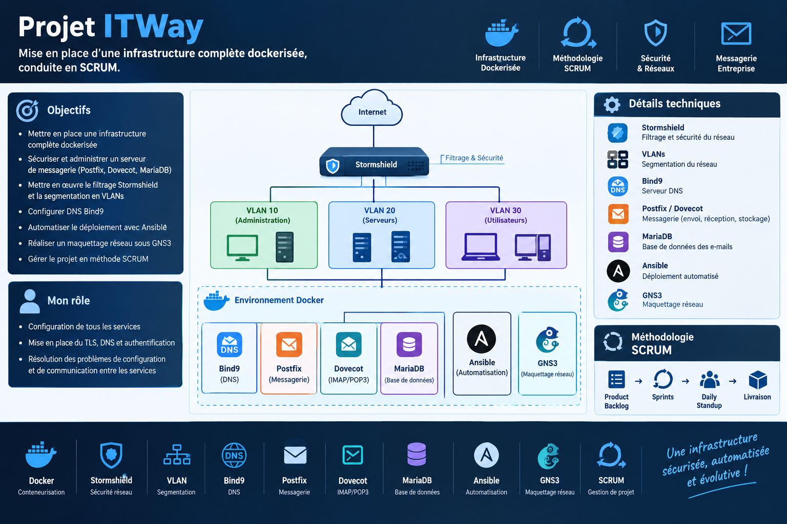

Bachelor Développeur Solutions Numériques Sécurisées
Une année pour associer développement applicatif et sécurité dès la conception, avec un projet mené en équipe selon la méthode SCRUM.
Projet principal
Projet ITWay
Mise en place d'une infrastructure complète dockerisée, conduite en SCRUM.
- Filtrage Stormshield et segmentation en VLANs
- DNS Bind9
- Messagerie Postfix/Dovecot
- Déploiement automatisé avec Ansible
- Maquettage réseau sous GNS3
DockerStormshieldVLANBind9PostfixDovecotAnsibleGNS3SCRUM
